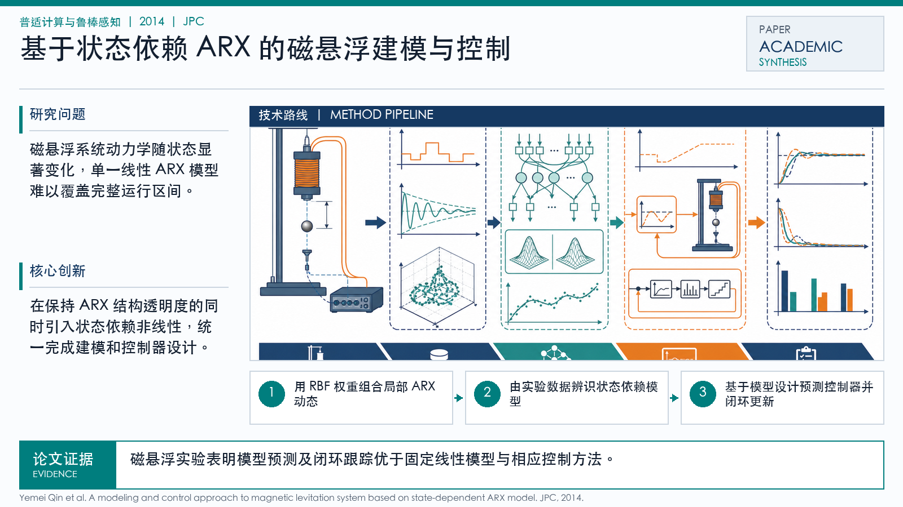

Problem
解决的问题
磁悬浮系统动力学随状态显著变化，单一线性 ARX 模型难以覆盖完整运行区间。
Pervasive Computing and Robust Sensing · 2014 · JPC
A modeling and control approach to magnetic levitation system based on state-dependent ARX model
Problem
磁悬浮系统动力学随状态显著变化，单一线性 ARX 模型难以覆盖完整运行区间。
Value
磁悬浮实验表明模型预测及闭环跟踪优于固定线性模型与相应控制方法。
Paper-grounded Academic Summary
该代表页依据原文摘要、贡献段与方法图注生成。方法视觉由 ImageGen 按论文证据逐篇绘制，中文研究问题、技术路线、创新点与实验结论采用确定性排版，以保证内容与字符准确。
打开原文 PDF
Technical Route
Innovation